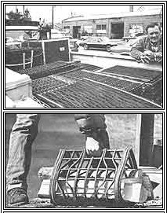

You can use rubber trash to earn a "retirement" income.
If you've been searching for a profitable home business that [1] doesn't cost an arm and a leg to set up and [2] might just give you that opportunity you've been looking for to get away from home for a while, you needn't look any further than the rubber tires used on your truck or automobile.
That's right . . . worn-out casings, from discarded vehicle tires, can become a little gold mine for folks who are willing to put a bit of effort into collecting and utilizing them for another purpose: making rubber floor mats!
Quite a few issues ago (see MOTHER NO. 48, page 144) we ran a short piece on tire recycling equipment, and-at the same time-we reprinted a related sidebar that had appeared two issues before that. As a result of the articles, our offices received quite a bundle of mail . . . including a short letter from one Ken Winans, a man from Fleetville, Pennsylvania who happened to be in the tire recycling biz and also happened to be quite successful at it. In short, Ken's missive stated that business was booming and that-the next time he was in MOM's Hendersonville, North Carolina stomping grounds-he'd drop by and show us just how his mobile matmaking operation worked.
Well, not too long ago, Ol' Ken and his wife did stop by . . . driving a new pickup loaded chock-full of machinery and floor mats! Ken had set up a self-contained miniature mat factory in his rig. And he'd designed his "plant"-complete with foldout tables, platforms, stools, and storage areas-so he could work right in and around the vicinity of the truck for the ultimate in convenience.
So, you may be asking, exactly how do Mr. and Mrs. Winans "ply" their trade? Quite simply: They drive around the country (at a downright leisurely rate, by the way), stopping at state and county fairs, flea markets, air shows, and carnivals-in short, at any public gatherings that might strike their fancy-and set up shop. Within minutes, curious folks begin collecting around the modern-day "peddler's wagon" . . . and we don't have to tell you that as soon as other people see even a small crowd assembled, they move right up, just to see what the fuss is all about!
In the case of the Winans sideshow, though, the onlookers are usually more than willing to buy. After all, since Ken has a minimum of overhead costs-and because his raw material comes free-he can afford to sell his floor mat products at prices that beat the store-bought competition all hollow . . . and chances are that his wares are of a better quality. (Not to mention the fact that there's just something special about merchandise that's handmade right before the buyer's eyes.)
The mat-manufacturing process is quite simple, too. After cutting the rubber rings into strips, Ken merely punches the necessary holes through the bands and joins them-side-to-side, by using nonrusting stainless steel or galvanized rods-with short sections of rubber hose between to serve as spacers.
The resulting products are solid, last-forever floor mats that can serve any number of purposes in homes, shops, stables, gyms, or what have you. In fact, Ken has the entire bed of his pickup lined with the "pedestrian pads", and he's even decked out his rig with a full set of recycled mud flaps. He doesn't stop there by any means, either: The inventive tinkerer also makes a completely flexible version of his standard mat (it's held together with nylon rope instead of metal rods) . . . and even weaves rubber-strip log carriers (complete with grips), and antiskid pads that come in handy for use under mud- or snowbound vehicles.
In short, the Winans family is downright pleased with the freedom and income (Ken recalls one day when they made over $2,000) that their little business provides . . . and there's no reason why other enterprising souls can't enjoy the very same benefits!
|
 FAR ABOVE: Using worn-out end discarded tire casings, Ken Winans weaves these attractive /and profitable!) floor mats. ABOVE: This recycled tire wood-carrier?which is just one of the enterprising peddler's products?is both sturdy and easy to handle. |
|
|